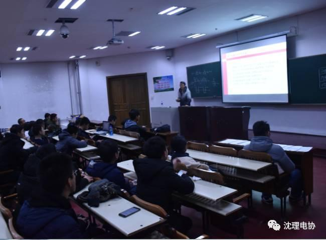
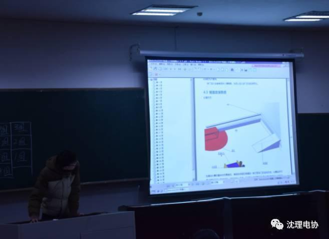
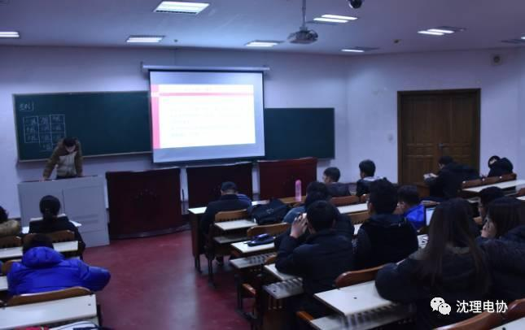
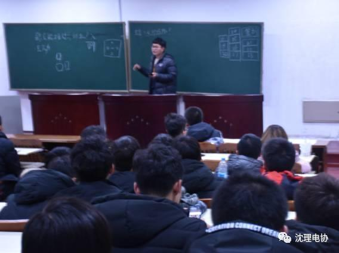
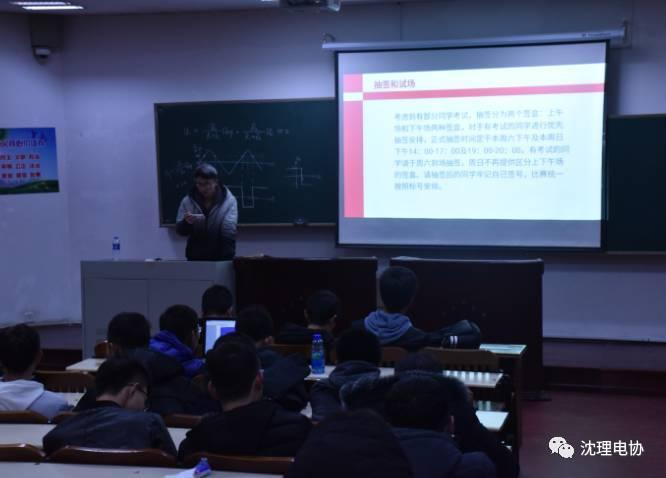

沈理电协教学之六
“电协举办的机器人足球赛要开始了！”
“真的吗。”“是啊是啊，好期待呢！”嘘——
这是电协的第六次教学了，随着大家期待的目光，教学内容也变成了“RB2017规则答疑和规则增补”。
在这节课上，学长们就比赛可能遇到问题的细节、比赛场地的变化、比赛过程的细节，通过文字和图片多种形式，给大家进行了详细的解说，一想到是跟比赛有关的，我们就打起了十二分的精神，认真地听。
开始讲的是小车结构的问题，如“什么样的算藏球结构”

后来讲的是比赛中的细节问题，如“可不可以不上坡把球弹射入滑道”

之后是机关的变化，总的来看，本届比赛较往年难度提升

然后又讲了比赛过程的细节，如“撞击阻止机关时不能超过4Hz”；最后学长还很不放心地提问我们呢

其间，我们得知，比赛将从明天开始抽签！

三十五页的比赛规则、多场次的抽签、若干个比赛细节问题的收集、妙趣横生的宣传、比赛场地的搭建，为了举办这次比赛，学长学姐们真的付出了很多，真心希望参赛选手能用精彩的表现，不枉此举、此行，我们，拭目以待！
编辑：罗杰
图片：信息部成员